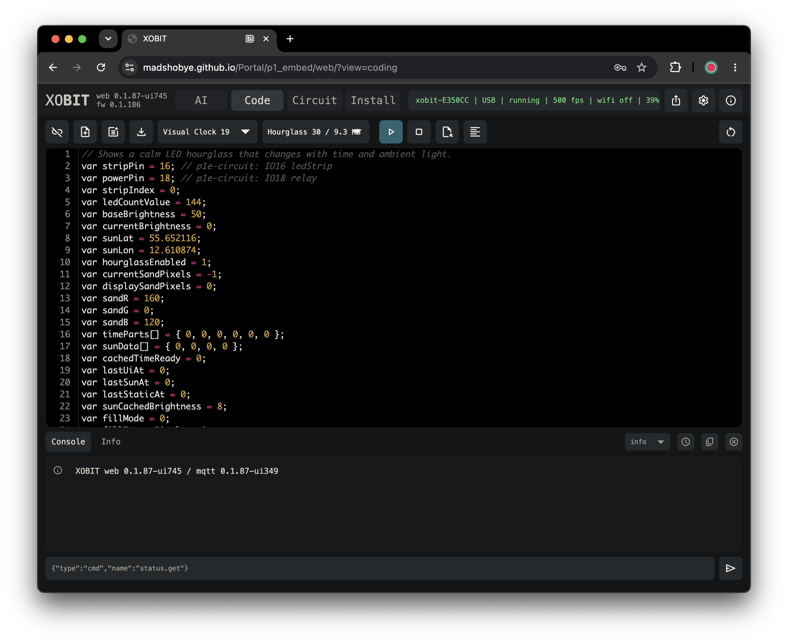
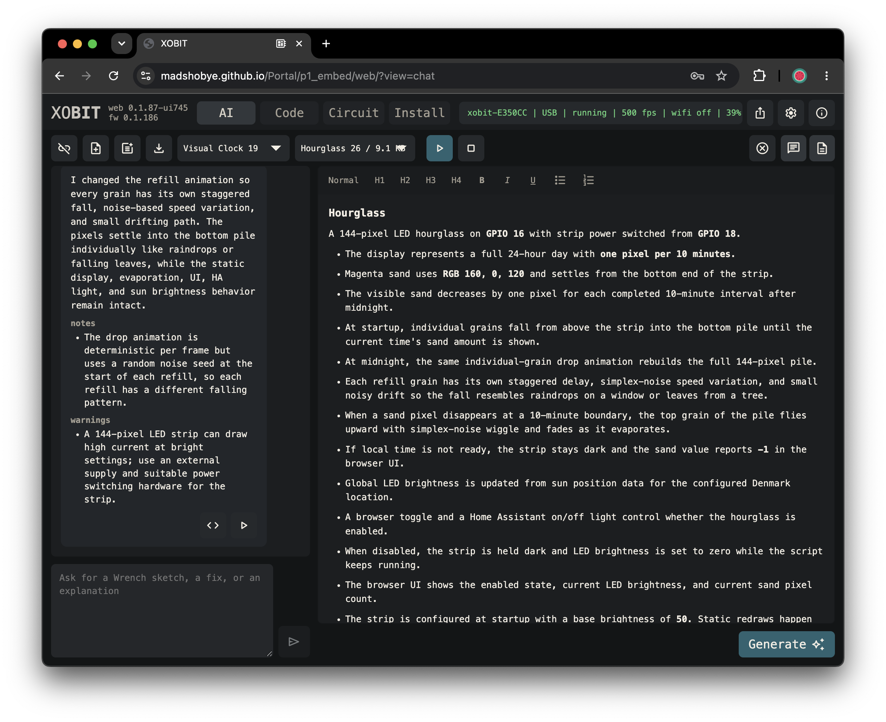
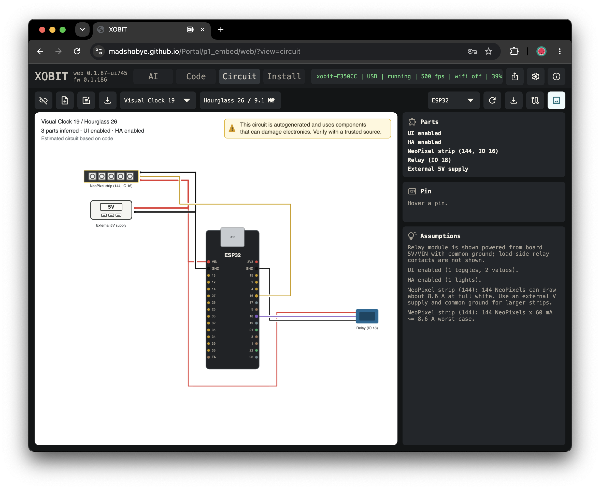
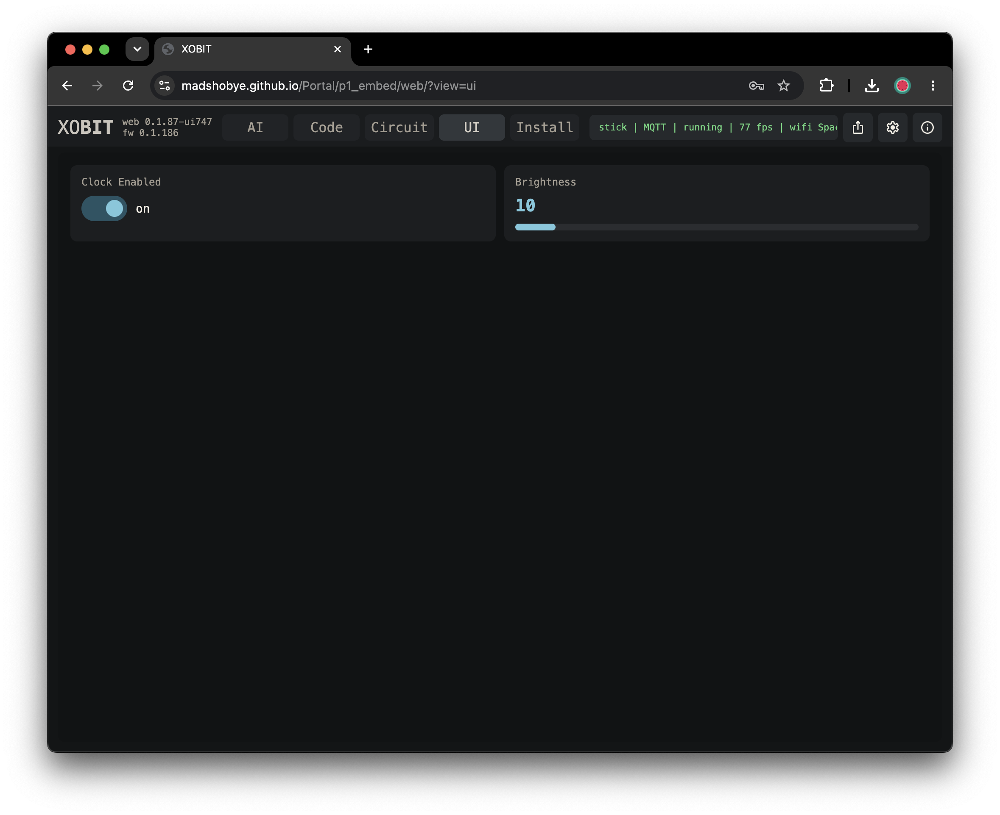
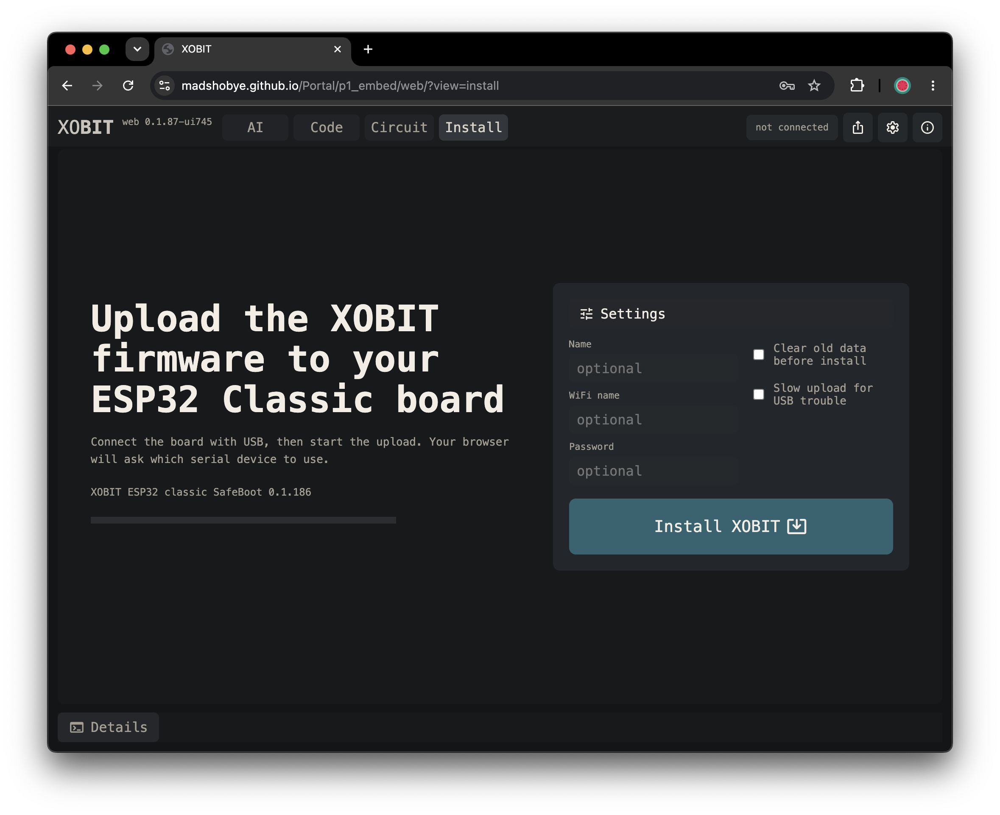
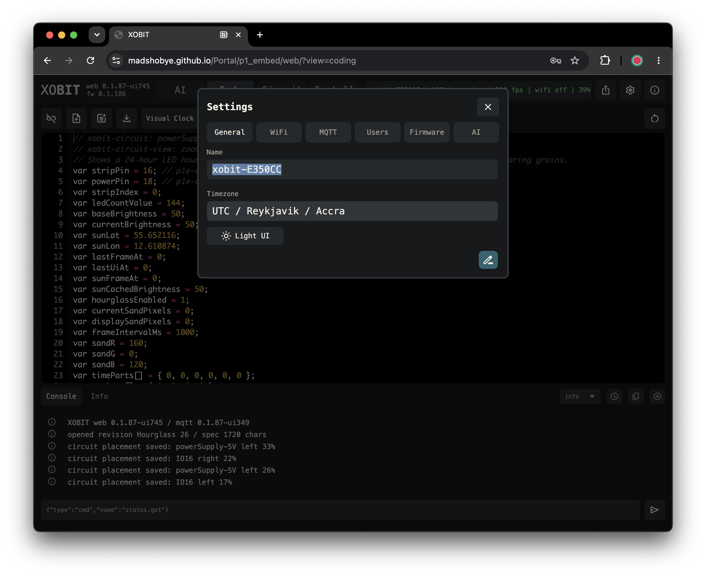
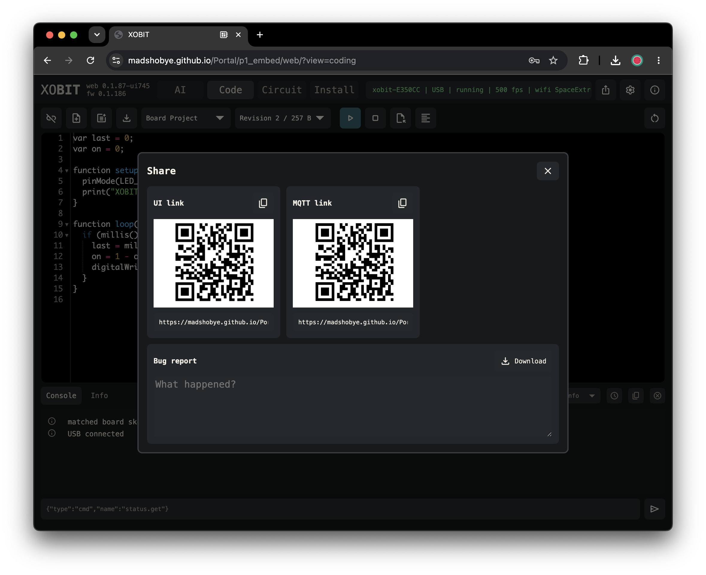

ESP32 creative coding environment
XOBIT lets a microcontroller become a live, scriptable object.
Write small scripts in the browser, run them on an ESP32, control LEDs and pins, build a live UI, connect over USB or MQTT, and let the AI assistant help shape code and documentation around the project you are making.
- Code, upload, stop, inspect logs, and recover sketches from the board.
- Keep projects as revisions with code, chat, specification, and circuit notes together.
- Drive LED strips, pins, sensors, environment-aware behavior, browser controls, online data, and Home Assistant entities.
XOBIT is already quite stable, but the firmware is under rapid development. Expect to find bugs sometimes, and expect to update the board firmware as the system matures.
This is still alpha-stage software: use it for experiments and prototypes, keep physical access to the board, and make backups before the work matters.
Built-in Capabilities
Code the board, shape the project, and keep live controls, circuit notes, online connection, AI context, Home Assistant, and firmware updates in one browser workspace.
Write scripts, upload, stop, inspect logs, and recover the running sketch from the board.
folder_open Local-first projectsKeep revisions, code, chat, specification, circuit notes, and exportable project JSON together.
usb USB and online controlStart over USB with Web Serial, then continue online with MQTT on WiFi.
auto_awesome AI-assisted makingUse chat to draft scripts and keep specification context near each project revision.
tune Live project UIExpose toggles, sliders, buttons, values, and graphs directly from the running sketch.
schema Circuit workspaceTrack parts, pins, power, wiring notes, assumptions, and generated diagrams beside the code.
home_iot_device Home Assistant bridgeExpose values, buttons, sliders, switches, and prototype state to Home Assistant.
system_update_alt OTA firmware updatesUpdate firmware from the browser with SafeBoot recovery for safer experiments.
Workspace Tour
Move between AI, code, circuit notes, and live controls as one connected workspace.







Guide Overview
Start with scripting, then choose the guide for the thing you want your object to do.
Variables, functions, arrays, loops, sketch structure, and XOBIT-specific syntax notes.
terminalSketch basicsPrinting, timing, random values, heap checks, and script error helpers.
memoryPins and actuatorsDigital pins, analog input, touch, PWM, servos, fans, and simple physical outputs.
wavesMath and motionScaling helpers, trigonometry, and noise for animation and sensor behavior.
scheduleLocal timeSynced clock values, local date parts, and timezone-aware timing.
wb_sunnySun locationSun position, daylight brightness, and color temperature for place-aware sketches.
flareLED stripsNeoPixel-style LED setup, RGB/HSV pixels, brightness, palettes, and frame output.
tuneBrowser UIDeclare live controls, consume UI events, and update values from the running sketch.
home_iot_deviceHome AssistantExpose script-defined entities and consume Home Assistant events.
psychologyUse your own LLMGive ChatGPT or another model the XOBIT Wrench context URL and ask for a script.
shield_lockSecurity modelHow local storage, USB, MQTT sign-in, guest access, and API keys are currently handled.
historyChange logShort notes about web updates, firmware deploys, visible changes, and known risks.